codly.themes
The built-in theme dictionaries, keyed by preset name; use codly.theme to render one or codly.define-theme to derive a reusable configuration.
Signature
codly.themes: dictionaryIts six keys are thesis, dark, clean, github-light, solarized-light, and one-light. Each value is a theme dictionary. thesis is Codly’s default appearance.
| Preset | Appearance |
|---|---|
thesis | Codly’s ordinary defaults, with language-colored badges and a light header. |
dark | Dark editor palette with light text and syntax colors. |
clean | Unboxed code with muted text and unpainted language badges. |
github-light | GitHub light editor palette. |
solarized-light | Solarized light editor palette. |
one-light | One Light editor palette. |
Theme dictionary keys
The theme loader accepts these shared token keys and element-section keys. Unknown top-level keys are rejected.
| Kind | Keys | Meaning |
|---|---|---|
| Shared token | foreground, muted, fill, accent, stroke, radius, inset | Main text, subdued text, code-line fill, accent color, outline, corner radius, and inner spacing. |
| Shared token | header-fill, footer-fill, bubble-fill | Fills for headers, footers, and callout bubbles. |
| Shared token | syntax, highlight-fill, highlight-colors, language-colors | Raw-code syntax theme, highlight fill, highlight color or palette, and whether language badges use their language colors. |
| Element section | block, line, number, lang, file, header, footer, highlight, callout, bubble, annotation | A dictionary of settings for that Codly element. Fields within a section follow that element’s settings; its text field accepts native Typst text settings. |
The public theme dictionary can be inspected or selected by key. For the exact merge behavior and validation when creating a custom dictionary, see codly.define-theme.
Behavior
The preset entries are complete theme dictionaries; looking up a preset does not apply it to the document by itself.
Example: Basic Usage
Renders one block per preset for side-by-side comparison:
#import "@preview/codly:2.0.0" as codly
#let source = ```py
def double(value):
return value * 2
```
#grid(
columns: (1fr, 1fr),
gutter: 6pt,
..codly.themes.keys().map(name => {
show: codly.theme(name)
codly.new(source, header: [#name])
}),
)Edit & run on your device
The highlighted source and output update after you stop typing. Copy code includes your edits.
